-
Dẫn động điều khiển hệ thống phanh bằng thuỷ không có trợ lực
Ở hệ thống dẫn động thuỷ lực, lực của người lái được truyền đến cơ cấu phanh bằng dòng chất lỏng thể hiện trên sơ đồ (Hình 10.34). Nguyên tắc truyền động là người lái tác động vào pít-tông xi-lanh chính để tạo ra chất lỏng có áp suất cao. Chất lỏng áp suất cao được truyền đến xi-lanh công tác và pít-tông công tác sẽ biến áp suất chất lỏng thành lực tác động vào guốc phanh.
Trên sơ đồ dẫn động (Hình 10.35). Người lái đạp vào bàn đạp (1), chất lỏng trong xi-lanh chính (2) sẽ được gia tăng áp suất và theo các đường ống dẫn (3) đi đến xi-lanh công tác (9) của cơ cấu phanh (4, 5, 6, 7) bố trí ở các bánh xe. Đường ống dẫn chất lỏng có vật liệu là kim loại (đồng). Riêng đoạn ống dẫn (8) đến các xi-lanh công tác ở các bánh xe được làm bằng cao su vì bánh xe khi di chuyển có chuyển động tương đối với thân xe.
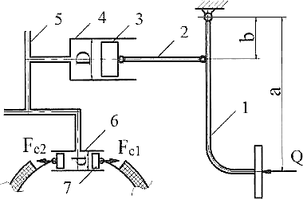
Hình 10.34. Sơ đồ dẫn dộng điều khiển phanh bằng thuỷ lực
1. Bàn đạp; 2. Thanh đẩy; 3, 4. Pit tông - Xi-lanh chỉnh; 5. Đường ống; 6, 7. Pit tông - xi-lanh công tác.
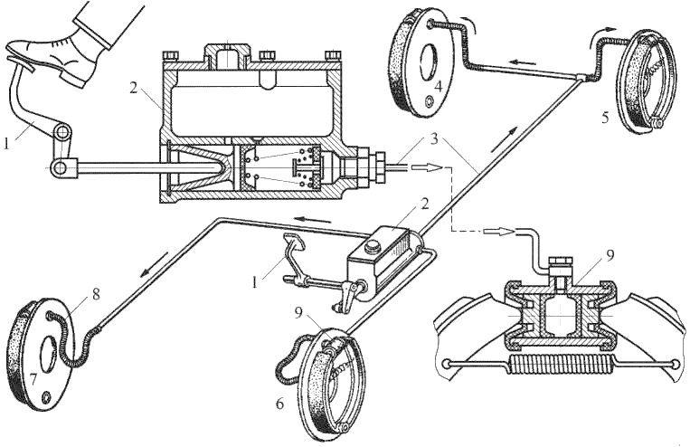
Hình 10.35. Dẫn động điều khiển hệ thống phanh thuỷ lực một dòng trên ô tô.
1. Bàn đạp phanh; 2. Xi-lanh chính; 3. Đường ống dẫn cứng; 4, 5, 6, 7. Cơ cấu phanh; 8. Đường ống dẫn mềm; 9. Xi-lanh công tác.
Ưu điểm:
- Có thể truyền đến nhiều cơ cấu phanh với mô men phanh và thời gian tác dụng đồng đều nhau.
- Độ nhạy cao do áp suất chất lỏng tăng đồng thời tại tất cả các nơi mà nó chiếm chỗ.
Nhược điểm:
- Lực điều khiển do người lái sinh ra nên độ lớn bị hạn chế. Hệ thống phanh sẽ bị mất tác dụng nếu có một chỗ nào đó của hệ thống bị rò rỉ.
- Khi có sự cố (lọt khí, rò dầu…), áp suất không đều sẽ gây mất cân bằng lực phanh giữa các bánh và lệch hướng chuyển động khi phanh, khó giữ ổn định cho thân xe.
- Hệ thống 1 dòng dễ bị lọt khí, rò rỉ tại các phớt, ống mềm làm giảm hiệu quả phanh theo thời gian nếu không xả khí thường xuyên.
Trong hệ thống phanh dẫn động bằng thuỷ lực tuỳ theo sơ đồ của mạch dẫn động mà người ta chia ra dẫn động một dòng và dẫn động hai dòng. Dẫn động một dòng nghĩa là từ đầu ra của xi-lanh chính chỉ có một đường dầu duy nhất dẫn đến các xi-lanh bánh xe, dẫn động một dòng có kết cấu đơn giản nhưng độ an toàn không cao. Vì vậy trong thực tế dẫn động phanh một dòng ít được sử dụng.
Dẫn động hai dòng (Hình 10.36) nghĩa là từ đầu ra của xi-lanh chính có hai đường dầu độc lập đến các xi-lanh bánh xe.
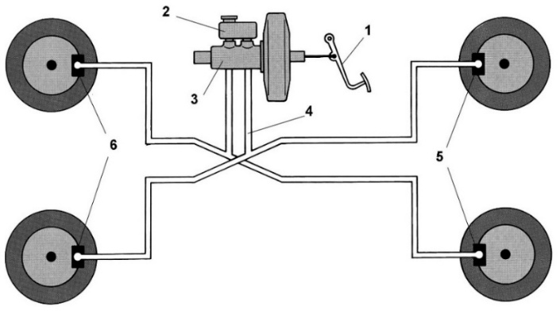
Hình 10.36. Sơ đồ nguyên lý hệ thống phanh thủy lực dẫn động hai dòng
1. Bàn đạp phanh; 2. Bình dầu phanh; 3. Xilanh phanh chính; 4. Ống dẫn dầu; 5. Cơ cấu phanh bánh sau; 6. Cơ cấu phanh bánh trước.
Do hai dòng hoạt động độc lập nên xi-lanh chính phải có hai ngăn độc lập. Do đó, khi một dòng bị rò rỉ thì dòng còn lại vẫn có tác dụng. Vì vậy, phanh hai dòng có độ an toàn cao nên được sử dụng nhiều trong thực tế. Dưới đây là các sơ đồ dẫn động thủy lực hai dòng thường gặp:
Một dòng dẫn động ra hai bánh xe cầu trước, còn một dòng dẫn tới các bánh xe cầu sau (Hình 10.37a).
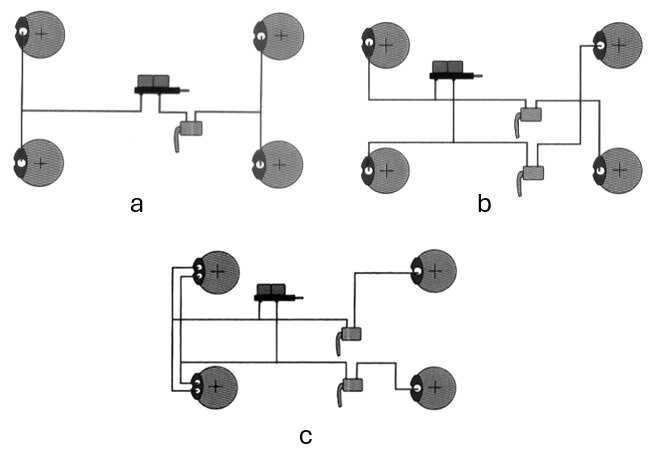
Hình 10.37. Sơ đồ bố trí các dòng thuỷ lực
Một dòng dẫn động cho bánh xe trước ở một phía và bánh xe sau ở phía khác, còn một dòng dẫn động cho các bánh xe chéo còn lại (Hình 10.37b).
Hai dòng dẫn động dầu hoạt động song song nhưng không liên quan nhau, và mỗi dòng đều phanh được cho cả bánh trước và bánh sau, chỉ khác nhau bên trái với bên phải (Hình 10.37c).
-
Dẫn động điều khiển hệ thống phanh bằng thuỷ có trợ lực
Để giảm nhẹ lực tác động của người lái trong quá trình sử dụng phanh, đồng thời tăng hiệu quả sử dụng phanh trong trường hợp phanh gấp, hệ thống phanh thường được trang bị thêm bộ trợ lực phanh.
Trợ lực phanh có hai dạng cơ bản là trợ lực bằng chân không và trợ lực bằng thủy lực (trợ lực dầu).
Bộ trợ lực thủy lực: Dùng một bơm có mô-tơ để tạo ra một áp suất thủy lực đủ lớn, nhằm giảm lực đạp phanh cần thiết (loại này ít phổ biến).
Bộ trợ lực chân không: Hoạt động dựa vào độ chênh lệch chân không của động cơ và áp suất khí quyển để tạo ra một lực mạnh tỉ lệ thuận với lực ấn của bàn đạp phanh. Nguồn chân không có thể lấy ở đường nạp động cơ hoặc dùng bơm chân không riêng làm việc nhờ động cơ (loại này dùng phổ biến trên hầu hết các loại xe du lịch, xe tải nhỏ).
-
Cấu tạo các cụm chi tiết của hệ thống phanh dẫn động bằng thuỷ lực
1. Xi-lanh chính và xi-lanh công tác
Cụm xi-lanh chính: có nhiệm vụ tạo ra áp suất chất lỏng (dầu phanh) trong hệ thống phanh khi có lực tác động của người lái. Áp suất chất lỏng trong hệ thống phanh khi phanh cực đại có thể đạt từ 5 đến 8 MPa hoặc hơn nữa. Cụm này bao gồm bầu chứa dầu phanh, xi-lanh, pít-tông, các van và còn được gọi là “tổng phanh”.
Hiện tại, xi-lanh chính dùng cho hệ thống phanh có từ 2 dòng thường là loại 2 pít tông (Hình 10.38), nên xi-lanh chính này gọi là xi-lanh chính kép. Có cấu tạo như Hình dưới:
Cụm xi-lanh chính hai pít-tông lắp trên hệ thống phanh dẫn động hai dòng. Hình 10.38 là bản vẽ mặt cắt cụm xi-lanh chính của dẫn động chất lỏng hai dòng dùng trên xe lắp cơ cấu phanh đĩa.
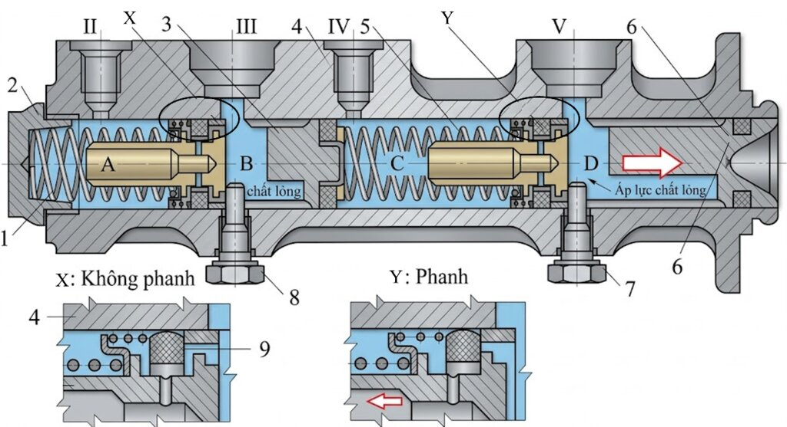
Hình 10.38. Xi-lanh chính kép
1, 5. Lò xo hồi vị; 2. Nắp; 3, 6. Pít-tông; 4. Xi-lanh; 7, 8. Vít hạn chế; 9. Phớt làm kín
Xi-lanh (5) được lắp hai pít-tông (3 và 6). Xi-lanh có hai đường cung cấp dầu phanh qua cửa III và cửa V. Hai bầu chứa dầu phanh được lắp trực tiếp vào hai cửa III và V hoặc qua đường ống dẫn. Đồng thời, xi-lanh cũng có hai cửa ra để chất lỏng đi đến các xi-lanh công tác là cửa II và IV. Thường mỗi cửa ra cung cấp dầu phanh cho hai bánh xe cùng một cầu. Pít-tông 6 được gọi là pít-tông sơ cấp, pít-tông 3 là pít-tông thứ cấp.
Khi lắp vào xi-lanh, hai pít-tông nối với nhau bằng lò xo (5), đồng thời chia xi-lanh thành hai khoang lớn là (A + B) và (D + C). Trên mỗi pít-tông có các phớt (9) chia các khoang lớn thành các khoang nhỏ. Pít-tông sơ cấp 6 nhận lực đẩy từ người lái thông qua bàn đạp phanh và hệ thống dẫn động.
Khu vực có phớt 9 được thể hiện ở mặt cắt trích I. Khi không phanh, khoang A thông với khoang B và khoang C thông với khoang D.
Khi phanh, pít-tông 6 di chuyển sang trái, thông qua lò xo (lò xo giữa pít-tông sơ cấp và thứ cấp) làm pít-tông 3 cũng di chuyển sang trái, lúc này phớt 9 chưa di chuyển. Khi pít-tông chạm vào phớt 9, khoang B bị ngăn cách với khoang A và khoang D bị ngăn cách với khoang C. Các pít-tông tiếp tục di chuyển, áp suất trong các khoang A và C tăng lên và chất lỏng sẽ qua các cửa II và IV đến các cơ cấu phanh.
Vì cơ cấu phanh đĩa không được phép có áp suất dư trong xi-lanh công tác (vì nếu có, pít-tông của xi-lanh công tác sẽ không trở về vị trí không phanh được) nên từ xi-lanh chính đến xi-lanh công tác không bố trí các van (van đi và van hồi) như trường hợp lắp cơ cấu phanh guốc.
Các đường ống dẫn (Hình 10.39) chất lỏng thường được chế tạo bằng đồng chịu được áp lực cao (10 MPa hoặc hơn nữa) và được bố trí sao cho khi vận hành không cản trở hoạt động của các bộ phận khác và phải đảm bảo an toàn, tức là ít có khả năng bị gãy, vỡ, bẹp,...
Đoạn đường ống dẫn từ khung xe đến bánh xe (hoặc cầu xe) là bộ phận có sự dịch chuyển tương đối với khung xe, do đó phải dùng ống cao su chịu áp lực cao.
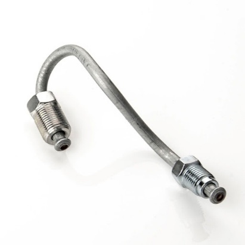
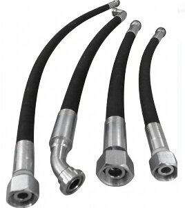
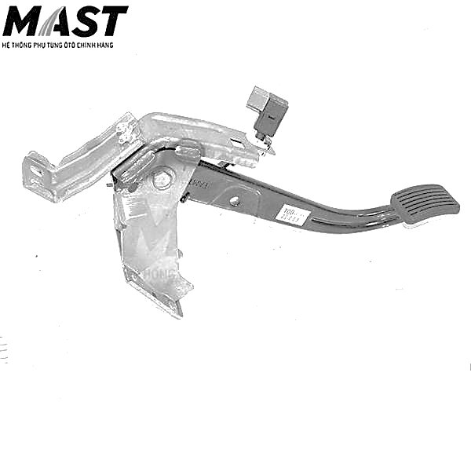
Hình 10.39. Ống nối cứng, ống nối mềm và bàn đạp phanh
Bàn đạp phanh được bố trí trong ca-bin xe, nơi người lái ngồi. Hành trình bàn đạp thường không quá 150 mm. Thông thường, bàn đạp tác dụng trực tiếp vào thanh đẩy và thanh đẩy tác dụng trực tiếp vào pít-tông của cụm xi-lanh chính, nên cụm xi-lanh chính cũng được bố trí gần ca-bin xe.
2. Bộ trợ lực chân không
Bầu trợ lực chân không thường gồm:
Vỏ bầu trợ lực gồm hai khoang, ngăn cách bởi màng đàn hồi (cao su); màng cao su ngăn cách khoang chân không và khoang khí quyển, truyền lực sang thanh đẩy; van một chiều nối bầu trợ lực với ống nguồn cung cấp chân không (bơm chân không), đảm bảo chỉ có dòng khí đi từ bầu trợ lực đi ra; cần đẩy nối bàn đạp phanh với pít-tông xi-lanh chính; lò xo hồi vị đưa màng về vị trí ban đầu khi nhả phanh.
Nguyên lý làm việc:
Hầu hết các bộ trợ lực chân không có ba trạng thái hoạt động là: nhả phanh, đạp phanh và duy trì phanh. Những trạng thái này được xác định bởi độ lớn của áp suất tác dụng lên thanh đẩy.
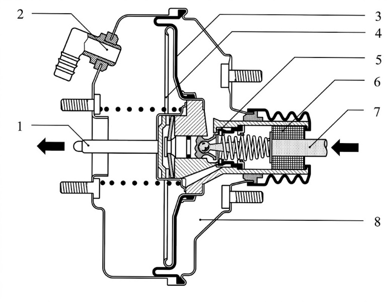
Hình 10.40. Sơ đồ cấu tạo bộ trợ lực chân không
1. Thanh đẩy xi-lanh; 2. Van chân không; 3. Màng ngăn; 4. pít-tông trợ lực; 5. Van điều khiển; 6. Lọc khí nạp; 7. Thanh đẩy bàn đạp; 8. Chân không.
Khi không phanh (chưa đạp bàn đạp phanh) (Hình 10.41):
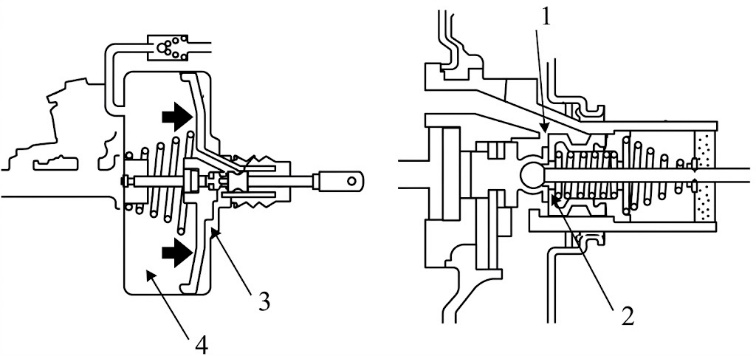
Hình 10.41. Hoạt động của bộ trợ lực chân không ở trạng thái không phanh
1. Cửa chân không (mở); 2. Cửa khí quyển ( đóng); 3. Buồng B; 4. Buồng A.
Khi không đạp phanh, cửa chân không mở và cửa không khí đóng. Áp suất giữa hai buồng A và B cân bằng nhau, lò xo hồi vị đẩy pít-tông về bên phải, không có lực (hoặc: áp suất) trên thanh đẩy.
Đạp phanh (Hình 10.42):
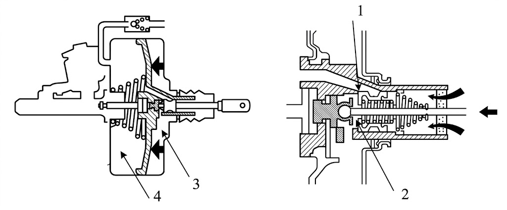
Hình 10.42. Hoạt động của bộ trợ lực chân không ở trạng thái đạp phanh
1. Cửa chân không (đóng); 2. Cửa khí quyển (mở); 3. Buồng B; 4. Buồng A.
Khi phanh, cần đẩy dịch chuyển sang trái làm cửa chân không đóng, cửa khí quyển mở. Buồng A thông với buồng khí nạp động cơ, buồng B có áp suất bằng áp suất khí quyển. Sự chênh lệch áp suất này tạo ra lực cường hóa đẩy pít-tông và màng cao su dịch chuyển về bên trái, tạo ra khả năng tăng lực đẩy cho pít-tông xi-lanh chính.
Giữ phanh (Hình 10.43):
Ở trạng thái giữ phanh, cả hai cửa đều đóng, do đó áp suất ở phía phải của màng không đổi, áp suất trong hệ thống được duy trì.
Khi nhả phanh, lò xo hồi vị đẩy pít-tông và màng ngăn về vị trí ban đầu. Trong trường hợp bộ trợ lực bị hỏng, lúc này cần đẩy sẽ làm việc như một trục liền. Do đó, khi phanh, người lái cần phải tác động một lực lớn hơn để thắng lực đẩy của lò xo và lực ma sát của cơ cấu.
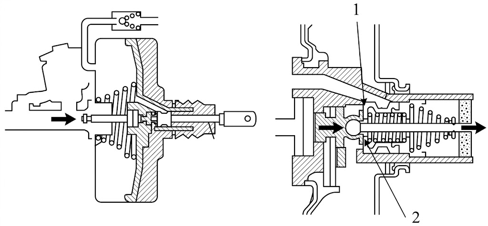
Hình 10.43. Hoạt động của bộ trợ lực chân không ở trạng thái giữ phanh
1. Cửa chân không (đóng); 2. Cửa khí quyển (đóng).
Ứng dụng: Hầu hết xe con, xe du lịch tại Việt Nam hiện nay đều dùng bộ trợ lực chân không để tăng hiệu quả phanh. Một số xe phổ biến: Toyota Vios, Honda City, Hyundai Accent, Mazda 3, Kia Cerato, VinFast Lux A2.0, Ford Ranger…
Ưu điểm: Tăng lực phanh mà không cần tăng lực bàn đạp (lực đạp phanh của người lái). Kết cấu đơn giản, độ tin cậy cao.
Nhược điểm: Phụ thuộc vào áp suất chân không của động cơ. Giảm hiệu quả nếu động cơ chết máy (nên có thêm bầu tích trữ chân không).
3. Van điều hoà lực phanh theo áp suất.
Loại van điều hòa này sử dụng thông số áp suất sau xi-lanh chính (hoặc sau van phân phối) để điều chỉnh áp suất đi đến cơ cấu phanh sau, cho nên còn được gọi là van điều hòa một thông số.
Van điều hòa áp suất phanh có nhiệm vụ phân phối hợp lý áp suất dầu phanh giữa bánh trước và bánh sau, đảm bảo hiệu quả phanh tối ưu, hạn chế hiện tượng bánh sau bị bó cứng khi phanh gấp, đặc biệt khi xe giảm tải hoặc phanh trên đường trơn.
Trong điều kiện phanh mạnh, tải trọng dồn về cầu trước làm giảm lực bám của bánh sau. Nếu không điều chỉnh, bánh sau dễ bị khóa. Van điều hòa sẽ giảm áp suất dầu tới bánh sau khi áp suất này vượt qua ngưỡng nhất định, giúp các bánh phanh đều, duy trì sự ổn định của xe.
Cấu tạo của van điều hòa lực phanh một thông số kiểu pít-tông được thể hiện trên Hình 10.44. Van điều hòa được lắp trên đường chất lỏng (dầu phanh) đi đến các cơ cấu phanh sau, như vậy dầu phanh đi qua van điều hòa rồi đến cơ cấu phanh sau. Vỏ của van điều hòa được cố định lên thân xe. Pít-tông có diện tích chịu áp lực chất lỏng phía phải lớn hơn phía trái do phía trái bị phần có đường kính d chiếm chỗ. Đồng thời, phía trái của pít-tông luôn chịu lực tĩnh (lực Ftx) của lò xo.
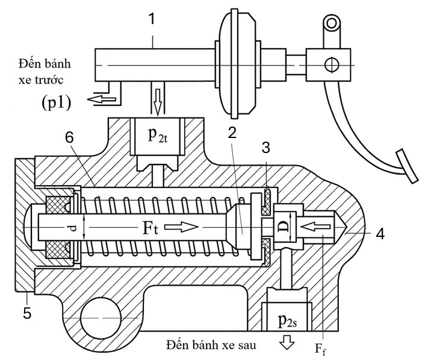
Hình 10.44. Van điều hoà theo áp suất phanh
1. Xy lanh chính; 2. Pít tông; 3. Phớt làm kín; 4. Thân van; 5. Lắp
Cụm van điều hòa áp suất thường gồm:
Thân van đúc bằng hợp kim nhôm hoặc gang, chứa các buồng dầu và lò xo đàn hồi; pít-tông chịu tác dụng của áp suất dầu từ xi-lanh chính và điều chỉnh dòng dầu đi tới cầu sau; van bi và lò xo duy trì trạng thái mở của dòng dầu cho tới khi áp suất vượt ngưỡng thiết kế; đường dầu vào - ra nối từ xi-lanh chính đến các mạch phanh cầu sau.
Nguyên lý làm việc
Khi phanh nhẹ (Áp suất thấp): Áp suất dầu từ xi-lanh chính tác dụng lên pít-tông điều tiết, thắng lực lò xo, van mở hoàn toàn → áp suất dầu đến bánh trước và bánh sau gần như bằng nhau.
Khi phanh mạnh (Áp suất cao): Áp suất dầu tăng cao → pít-tông trong van dịch chuyển, nén lò xo → van bi đóng dần đường dầu ra cầu sau → làm giảm áp suất dầu phanh bánh sau so với bánh trước.
Khi nhả phanh: Áp suất giảm, lò xo đẩy pít-tông và van bi trở lại vị trí ban đầu, khôi phục thông mạch dầu.
Ứng dụng
Trên xe du lịch: van điều hòa được tích hợp trong bộ chia dầu, điều chỉnh tự động theo áp suất.
4. Van điều hoà lực phanh theo áp suất phanh và tải trọng
Van điều hòa loại này ngoài thông số áp suất phanh (cường độ phanh), người ta đưa thêm một thông số điều chỉnh nữa đó là tải trọng của xe, cụ thể là khoảng cách giữa cầu sau của xe và thân xe (Hình 10.45). Vì thế, van còn được gọi là van điều hòa hai thông số.
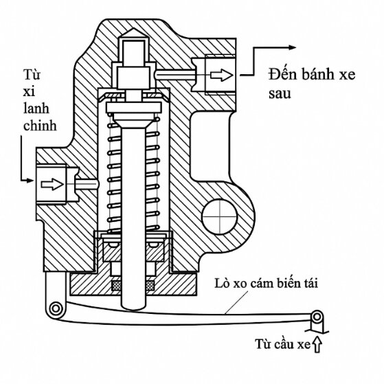
Hình 10.45. Van điều hòa theo áp suất phanh và tải trọng xe
Khi tải trọng thay đổi, biến dạng của hệ thống treo thay đổi và do đó, khoảng cách giữa cầu xe và thân xe thay đổi theo. Tải trọng tăng, khoảng cách giữa cầu xe và thân xe giảm đi và ngược lại, tải trọng giảm, khoảng cách giữa cầu xe và thân xe tăng lên. Người ta sử dụng sự tăng giảm khoảng cách cầu xe và thân xe để làm thông số điều chỉnh van điều hòa (cùng với thông số áp suất phanh hay còn gọi là cường độ phanh).
Van điều hòa loại này ngoài những chi tiết cơ bản của van điều hòa áp suất phanh, còn có thêm một lò xo cảm biến tải trọng được nối với cầu sau của xe.
Khi tải trọng cầu sau thay đổi, lực do lò xo cảm biến tải tác dụng lên pít-tông trong van cũng thay đổi.
Van điều hòa hai thông số thường gồm hai phần chính:
-
Phần điều chỉnh áp suất phanh: Nhận dầu từ xi-lanh chính và phân phối đến bánh sau.
-
Phần cảm biến tải trọng: Gồm cần nối và lò xo liên kết với cầu xe, tác dụng lên pít-tông van.
Nguyên lý làm việc
Khi tải trọng cầu sau thay đổi, độ biến dạng của hệ thống treo và cầu xe cũng thay đổi, kéo theo độ căng của lò xo cảm biến tải.
Khi xe đầy tải: Lò xo cảm biến tải bị nén nhiều sẽ gây ra lực tác dụng lên pít-tông lớn, làm cho van mở nhiều hơn khiến áp suất dầu tới phanh sau cao hơn.
Khi xe không tải hoặc tải nhẹ: Lò xo giãn sẽ gây lực tác dụng nhỏ, làm cho van điều tiết làm việc sớm hơn dẫn tới giảm áp suất dầu đến phanh sau, tránh hiện tượng bánh sau bị khóa (bó cứng).
Ứng dụng
Van điều hòa loại này thích hợp cho xe có sự thay đổi tải trọng lớn giữa có tải và không tải, như xe tải nhẹ và xe du lịch.
Khi xe phanh, van tự động điều chỉnh áp suất dầu đến bánh sau tương ứng với tải trọng thực tế, giúp cải thiện hiệu quả phanh và tránh trượt bánh sau.